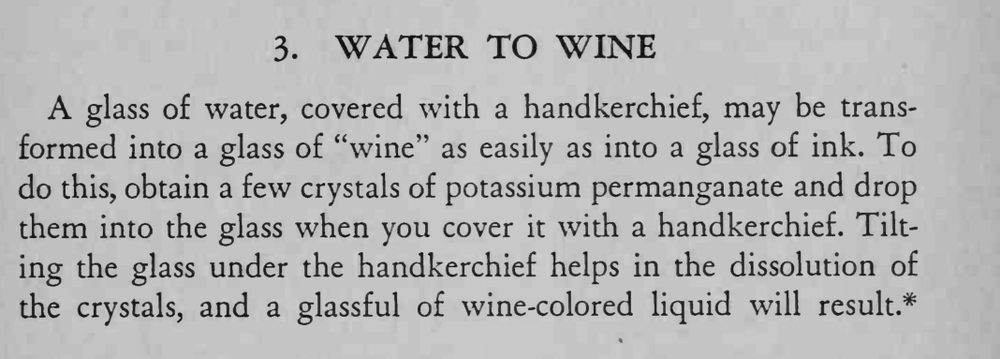

一杯清水用手帕盖住，揭开后变成一杯葡萄酒色的液体。
这杯液体不能饮用。

A glass of water, covered with a handkerchief, may be transformed into a glass of "wine" as easily as into a glass of ink. To do this, obtain a few crystals of potassium permanganate and drop them into the glass when you cover it with a handkerchief. Tilting the glass under the handkerchief helps in the dissolution of the crystals, and a glassful of wine-colored liquid will result.*